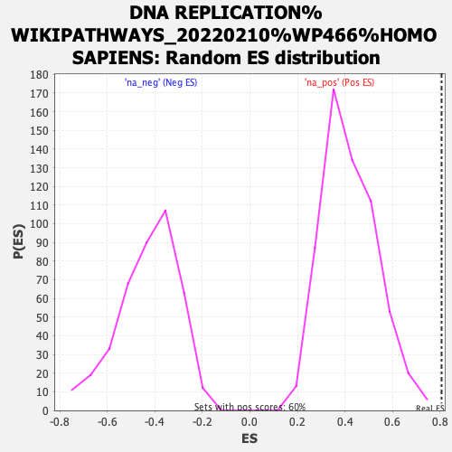

| | | Dataset | gata3_ranked_genelist |
| Phenotype | NoPhenotypeAvailable |
| Upregulated in class | na_pos |
| GeneSet | DNA REPLICATION%WIKIPATHWAYS_20220210%WP466%HOMO SAPIENS |
| Enrichment Score (ES) | 0.8059631 |
| Normalized Enrichment Score (NES) | 1.9158514 |
| Nominal p-value | 0.0 |
| FDR q-value | 0.021223983 |
| FWER p-Value | 0.283 |
Table: GSEA Results Summary
 Fig 1: Enrichment plot: DNA REPLICATION%WIKIPATHWAYS_20220210%WP466%HOMO SAPIENS
Fig 1: Enrichment plot: DNA REPLICATION%WIKIPATHWAYS_20220210%WP466%HOMO SAPIENS
Profile of the Running ES Score & Positions of GeneSet Members on the Rank Ordered List
| SYMBOL | RANK IN GENE LIST | RANK METRIC SCORE | RUNNING ES | CORE ENRICHMENT | | 1 | MCM6 | 42 | 5.998 | 0.1478 | Yes |
| 2 | PCNA | 50 | 5.647 | 0.2895 | Yes |
| 3 | RFC1 | 95 | 4.193 | 0.3916 | Yes |
| 4 | MCM2 | 113 | 3.889 | 0.4882 | Yes |
| 5 | CDT1 | 179 | 3.052 | 0.5599 | Yes |
| 6 | MCM5 | 245 | 2.635 | 0.6211 | Yes |
| 7 | CDC45 | 532 | 1.759 | 0.6424 | Yes |
| 8 | POLE | 551 | 1.732 | 0.6846 | Yes |
| 9 | POLA1 | 601 | 1.637 | 0.7219 | Yes |
| 10 | RPA1 | 967 | 1.216 | 0.7232 | Yes |
| 11 | PRIM1 | 974 | 1.212 | 0.7533 | Yes |
| 12 | RFC4 | 987 | 1.204 | 0.7826 | Yes |
| 13 | CDK2 | 1297 | 1.000 | 0.7830 | Yes |
| 14 | POLD3 | 1323 | 0.991 | 0.8060 | Yes |
| 15 | MCM7 | 1816 | 0.782 | 0.7861 | No |
| 16 | POLD2 | 2883 | 0.517 | 0.7134 | No |
| 17 | MCM10 | 3763 | 0.381 | 0.6524 | No |
| 18 | RFC3 | 4990 | 0.240 | 0.5598 | No |
| 19 | RFC2 | 5963 | 0.151 | 0.4855 | No |
| 20 | POLA2 | 6577 | 0.103 | 0.4388 | No |
| 21 | RPA3 | 7424 | 0.043 | 0.3718 | No |
| 22 | POLD4 | 7536 | 0.034 | 0.3638 | No |
| 23 | UBC | 8462 | -0.032 | 0.2902 | No |
| 24 | POLE2 | 9523 | -0.144 | 0.2086 | No |
| 25 | ORC3 | 9988 | -0.213 | 0.1767 | No |
| 26 | CDC6 | 10593 | -0.341 | 0.1367 | No |
| 27 | GMNN | 11104 | -0.539 | 0.1093 | No |
Table: GSEA details [plain text format]

Fig 2: DNA REPLICATION%WIKIPATHWAYS_20220210%WP466%HOMO SAPIENS: Random ES distribution
Gene set null distribution of ES for DNA REPLICATION%WIKIPATHWAYS_20220210%WP466%HOMO SAPIENS